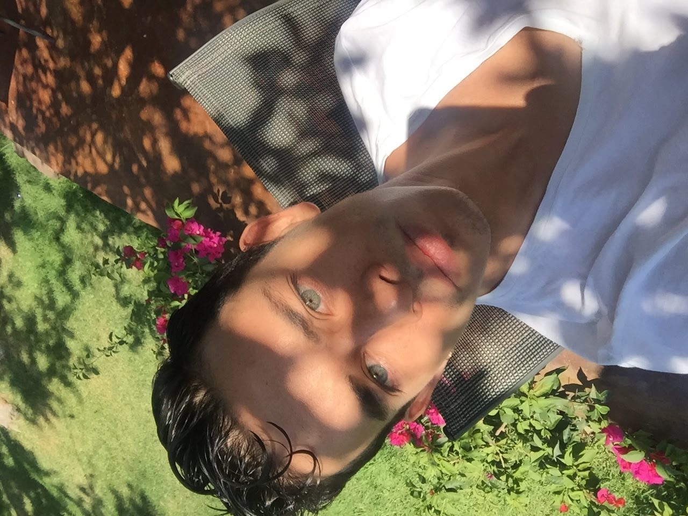

Daniel Vélez

SUMARRY
I am José Daniel Vélez Sánchez, a dedicated professional in contemporary dance, customer service, and event coordination.
With a Bachelor's Degree in Contemporary Dance, I have performed worldwide and taught dance classes, inspiring students. My experience includes roles at Twin Lions Casino, GAP, LEGO, Jardín La Petite, D' La Eventos, and co-founding the OnLiveMovnt Dance Academy.
Thank you for visiting and exploring my career, achievements, and current projects.
EDUCATION
- Bachelor's Degree in Contemporary Dance, Instituto Superior de Artes Escénicas, Guadalajara (01/2014 - 12/2018)
WORK EXPERIENCE
- Twin Lions Casino, Guadalajara
May 2023 - January 2025
- Customer Service Representative
- Event Coordinator
- GAP, Guadalajara
November 2022 - April 2023
- Customer Service Representative
- LEGO, Guadalajara
November 2021 - October 2022
- Store Leader & Customer Service Representative
- Jardín La Petite, Guadalajara
January 2019 - October 2021
Complete CV
PDF
SKILLS
- Customer Service
- Event Coordination
- Contemporary Dance
- Choreography
- Teaching
- Leadership
- Teamwork
- Problem Solving
- Time Management
- Communication
LANGUAGES
- Spanish (Native)
- English (Advanced)
OTHER
©Daniel Vélez. All rights reserved.